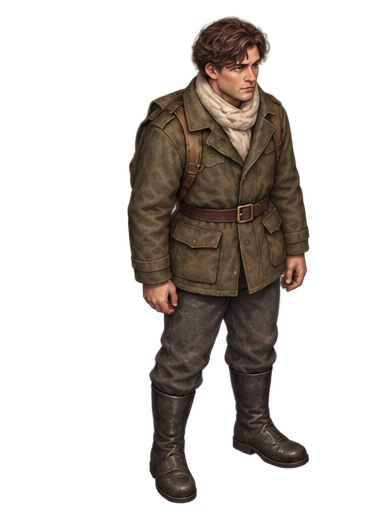

<!doctype html><html lang="zh-CN"><meta charset="utf-8"><meta name="viewport" content="width=device-width,initial-scale=1"><title>伊万动作样片</title><style>body{margin:24px;background:#18232a;color:#e1ddcc;font:17px system-ui}main{max-width:1000px;margin:auto}h1{font-size:26px}select,button,input{font:inherit;margin:6px;padding:8px}figure{margin:0}section{display:flex;gap:24px;flex-wrap:wrap}img{width:384px;height:512px;object-fit:contain;background:#e6e4df}small{color:#b3b7ad}p{line-height:1.6}#note{max-width:850px}</style><main><h1>伊万动作 GIF 样片</h1><p>参考：最初裁出的 V3 形象站姿。生图接口未暴露型号；本页不声称已确认 image2.6。</p><select id="clip"><option value="gun">举枪—瞄准—射击—收回</option><option value="walk-retry">步行第二稿（未通过）</option><option value="walk-first">步行第一稿（未通过）</option></select><button id="play">暂停</button><button id="next">下一帧</button><label>每帧时长 <input id="speed" type="range" min="60" max="400" value="150"><span id="ms">150</span> ms</label><p id="counter"></p><section><figure><figcaption>本轮 AI 动作原帧</figcaption></figure><figure><figcaption>原始站姿参考</figcaption></figure></section><p id="note"></p><small>预览按原始格子切帧，不改变身体比例，不镜像、不拼腿、不补造中间帧。GIF 文件保留各自设定时长；本页滑块用于逐帧观察。</small></main><script>const $=x=>document.getElementById(x);let i=0,on=true,last=0;const cache={};for(const c of ['gun','walk-retry','walk-first'])cache[c]=Array.from({length:8},(_,n)=>{const im=new Image();im.src='frames/'+c+'/'+String(n+1).padStart(2,'0')+'.png';return im});function draw(){$('frame').src=cache[$('clip').value][i].src;$('counter').textContent='第 '+(i+1)+' / 8 帧';$('note').textContent=$('clip').value==='gun'?'枪械动作顺序可辨，头部、脚点与枪形仍有变化；尚未接入游戏。':'未通过：同侧迈步重复，双腿交替不充分，上身有漂移。保留真实结果，不冒充合格动作。'}$('play').onclick=()=>{on=!on;$('play').textContent=on?'暂停':'播放'};$('next').onclick=()=>{on=false;$('play').textContent='播放';i=(i+1)%8;draw()};$('clip').onchange=()=>{i=0;draw()};$('speed').oninput=()=>{$('ms').textContent=$('speed').value};function tick(t){if(on&&t-last>=Number($('speed').value)){i=(i+1)%8;draw();last=t}requestAnimationFrame(tick)}draw();requestAnimationFrame(tick)</script></html>